User’s Guide¶
If you have yet to install Polo on your machine, head to the installation guide here.
Importing and Opening Image Data¶
The first step to using Polo is adding your own data. Polo organizes data into “runs”, which consist of a set of related screening images. Polo organizes runs into three different categories which are described below.
HWI Screening Runs
Non-HWI Screening Runs
Raw Image Collections
Getting Your Data (via FTP)¶
If you do not already have your data downloaded to your local machine, Polo includes an FTP file browser which utilizes Python’s ftplib package. For HWI users this allows you to download your screening images from the HWI server without leaving the application.
To open the FTP file browser, on the menubar navigate to Import -> Images -> From FTP. Enter your credentials in the new window. Once you are connected to a server files available to download will be listed in the browser menu.
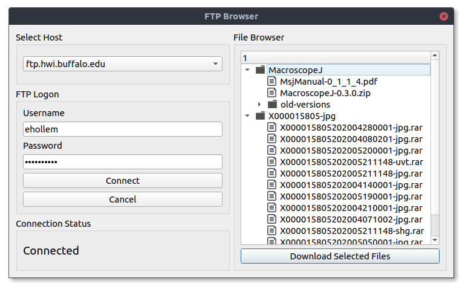Select the checkboxes next to the files you wish to download, or select all files in a directory at once. Pressing “Download Selected Files” will start the download.
Since these are large files, Polo will download them in the background so you can continue to the program normally. Once all files are downloaded Polo will notify you that your download is complete. Closing Polo before this will result in an incomplete download.
Importing Images from a Directory¶
Once you have your images on your local machine you can import them into Polo by using the Run Importer tool. It can be opened by navigating to the menu bar and selecting Import -> Images -> From Directory. A window like the one below will then open.
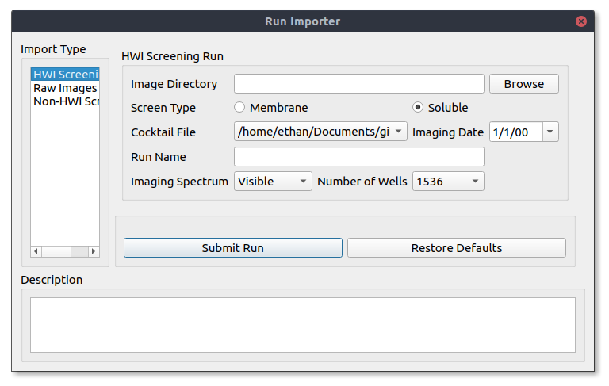If you are importing HWI screening images select HWI Screening Run from the Import Type window (Beta testers do this). Select Browse to open a file browser and select the directory containing the images you want to import.
Other import types are included for compatibility with other high-throughput protocols but metadata for these import modes is out of the scope of the program. This means runs imported as these types will have fewer available features.
However, since HWI has standard naming conventions Polo will suggest settings for your run including what cocktail file to use, the date of imaging, the spectrum and the number of wells. However, if you want to change any of these settings you are free to do so.
Once you are happy with your import click Submit Run to load your images into Polo.
Importing a Saved Run¶
One of the advantages of Polo is the introduction of the .xtal file format. Xtal is a json like file that can store all the data relating to an individual screening run in a single file with no other dependencies. Xtal files store images, classifications, cocktail data and other annotations made while using the Polo program.
If you have xtal file ready for import you can load it into Polo by navigating to the menu bar and selecting Import -> Images -> From Saved Run. This will open a file browser and allow you to select the xtal file you wish to import.
Opening a Run¶
Once a run has been successfully imported, the run name will appear in the Loaded Runs list, like in the image below.
If it is a new run double clicking on the run name will run the MARCO model on the run’s images. You can check on MARCO’s progress by using the Classification Progress bar located just below the Loaded Runs list. Polo will also attempt to estimate the time remaining in your classification job.
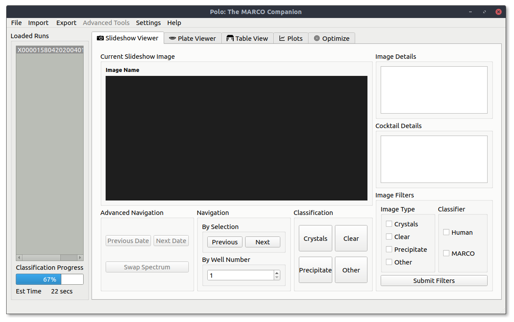
Once a run has been classified you can load it into the current view by double clicking on it again. This will set the selected run as your Current Run and all actions will be taken in reference to this run. You can change your current run by double clicking another loaded run in the Loaded Runs tab.

Using the Slideshow View¶
The slideshow view is the main Polo user interface. It allows you to view your screening images, label them and filter them by MARCO classifications, your own classifications or both.
Classification¶
Arguably the most important Polo feature is the ability to easily label your screening images. To label the currently displayed image press the button in the Classification panel with your desired label. You can classify images as Crystals, Precipitate, Clear or Other. To increase your speed you can classify images using keyboard shortcuts which are listed below.
1: Crystal
2: Precipitate
3: Clear
4: Other
Classifying an image will automatically move you to the next image in the slideshow.
Filtering¶
Using the checkboxes under the Image Filters panel in the lower right corner of the window will allow you to filter the kinds of images in your current slideshow. For example if you only wanted to see images that MARCO has classified as Crystal you could check the Crystal box under Image Types and MARCO under the Classifier panel. If you had checked Human instead only images that you have classified as Crystal would be shown.
You can reset the slideshow to include all images by selecting all checkboxes or no boxes and pressing submit filters.
Image Metadata¶
Image metadata will be displayed in the Image Details and Cocktail Details windows when it is available. Image details will give you basic information about the image currently being displayed, such as well number, imaging technology imaging date and current classifications. If you are viewing an HWI run the chemical conditions the current image was plated in will be displayed in the Cocktail Details window.
Using the Plate Viewer¶
To view multiple images in a grid you can utilize the Plate Viewer, which can be found under the Plate Viewer tab. When you first open it up, it will look something like the image below.
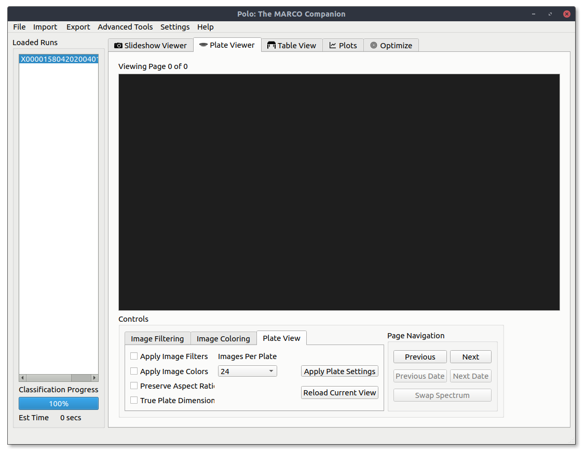
Basic Controls¶
Assuming you have a run loaded and selected press Reload Current View button to load in some images with the current settings.
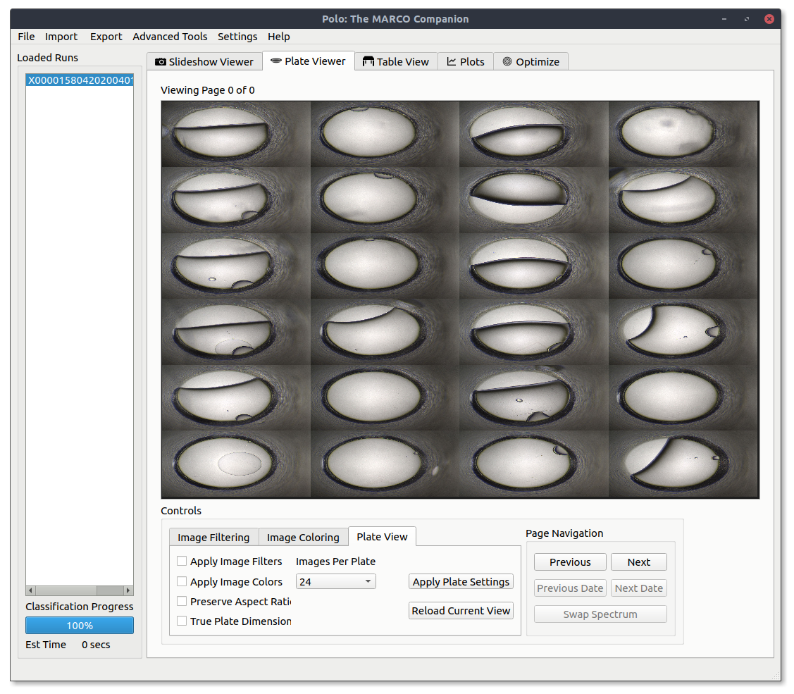
You can adjust the number of images shown in the grid by using the Images Per Plate combo box and pressing Reload Current View.
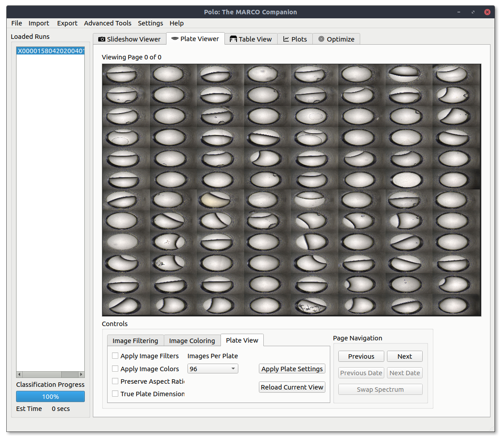
You can navigate to the next or previous view by using the Next or Previous buttons respectively.
Image Filtering and Coloring¶
The Plateviewer window allows you to highlight images by either their MARCO classification or the one you have given them. This allows you to find true hits faster. First we will look at how to color images by their classification.
Open the Image Coloring tab on the bottom of the Plateviewer window. Use the combo boxes to assign a color to each classification type. The MARCO and Human radiobuttons tell Polo what classifier to use. After you have picked out a color scheme switch back to the Plate View tab select the Apply Image Colors checkbox and press the Apply Plate Settings button to color your images.
Note
The Apply Image Colors checkbox must be selected for colorings to be applied.
A 96 well view with colors applied to all MARCO classifications.
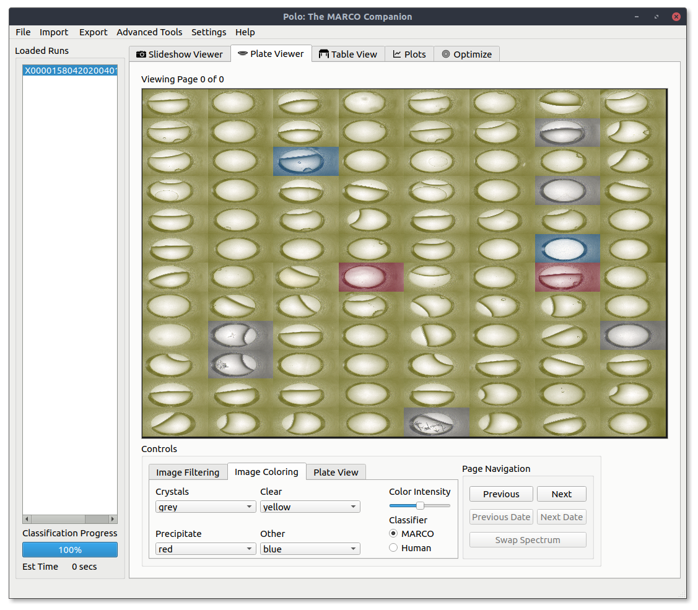
A disappointing 96 well view with only the Crystal classified images colored blue.
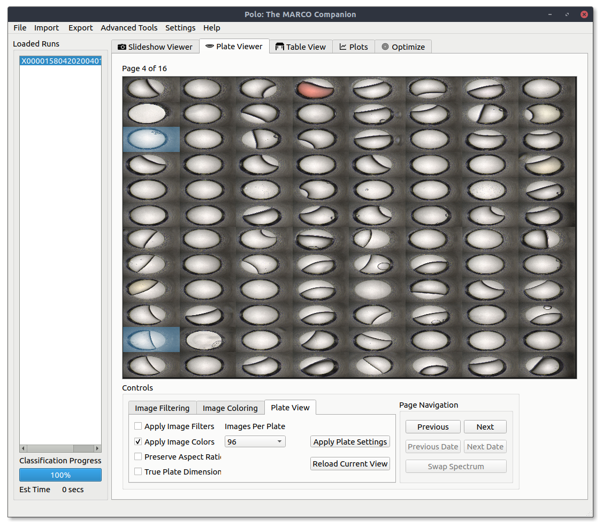
Similarly, images can also be emphasized and deemphasized by either their human or MARCO classification. Use the checkboxes under the Image Filtering tab to select which images to emphasize. Then switch back to the Plate View tab and check the Apply Image Filters box and hit Apply Plate Settings.
The same view as above but only selecting for MARCO classified crystal images.
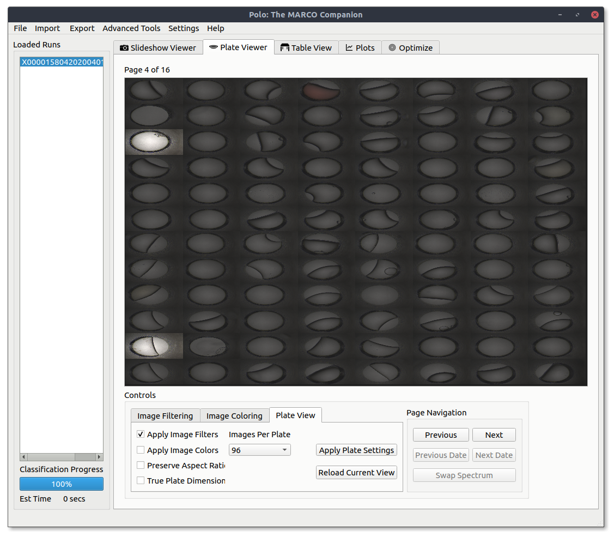
Detail View¶
If you see an image that looks interesting you can select it and it will be opened in a popout window like the one below. Here you can view details about the image and assign it a classification using the buttons in the Human Classification panel.
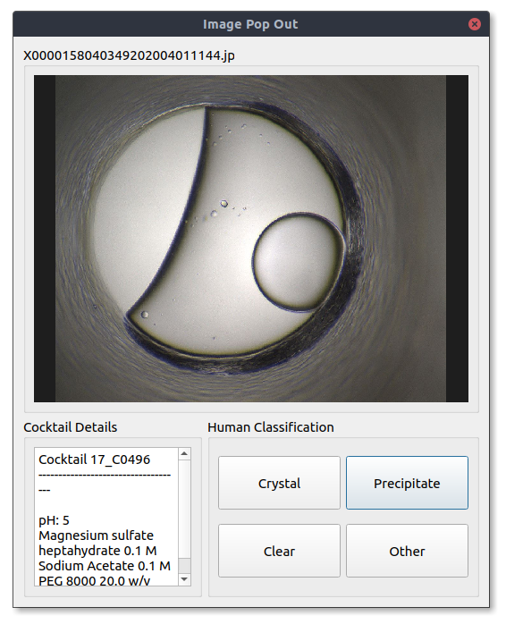
Using the Table View¶
The table view allows you to view a run in a spreadsheet like view and does not display images.
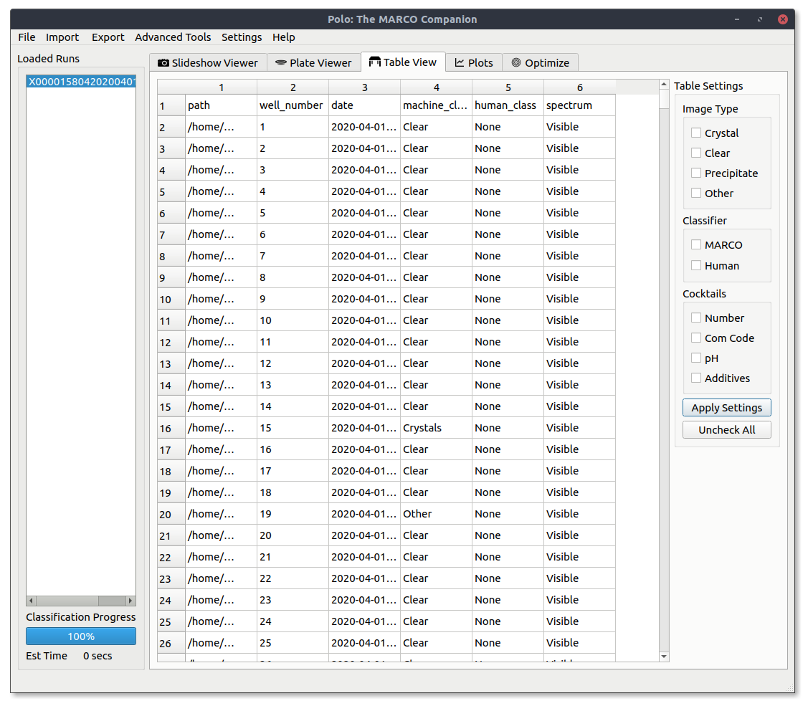
Filtering¶
Just like the Slideshow Viewer and Plate Viewer tabs you can filter what data is shown to you in the table view. For those familiar with SQL this is like a SELECT / WHERE statement. Press the Apply Settings button to apply your currently selected filters.
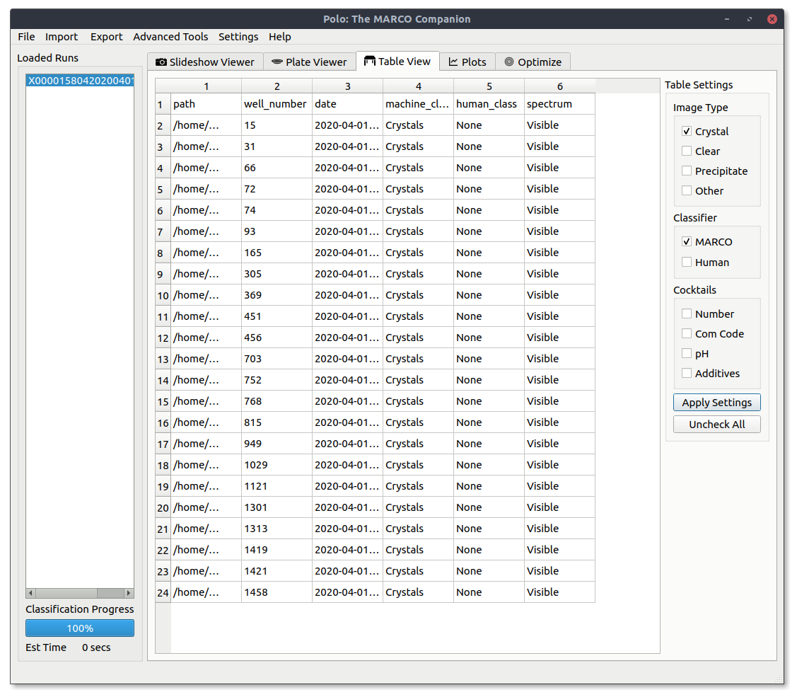
Using Plot Functions¶
Polo utilizes the Matplotlib python library to provide a few diagnostic plots to give you more information on your screening run. Once a run is loaded in plots can be viewed by selecting the Plots tab.
MARCO Accuracy¶
View a basic bar graph of MARCO classification accuracy. Correct classifications are those where the model applied the same classification as the human.
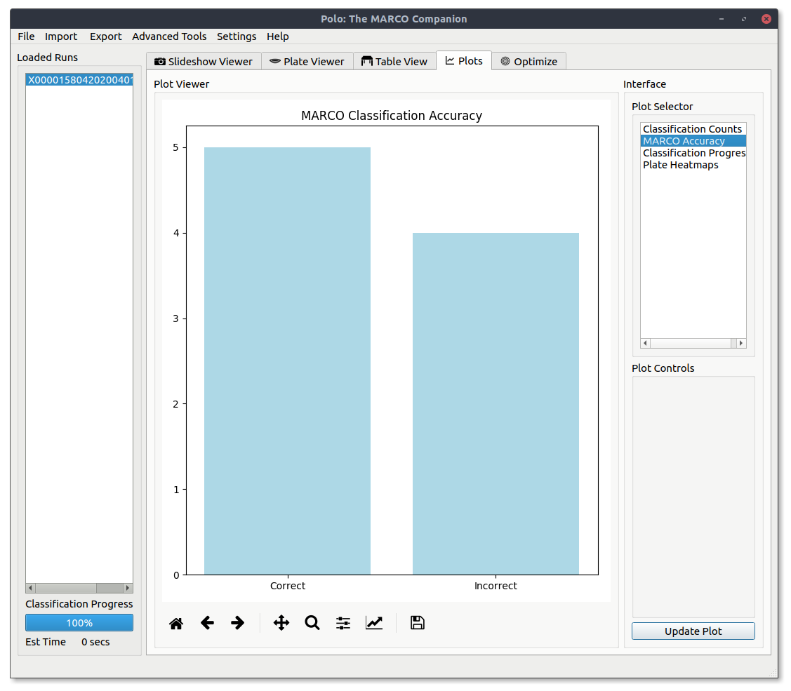
Plate Heatmaps¶
View the MARCO model confidence for each image classification across all images in your screening run.
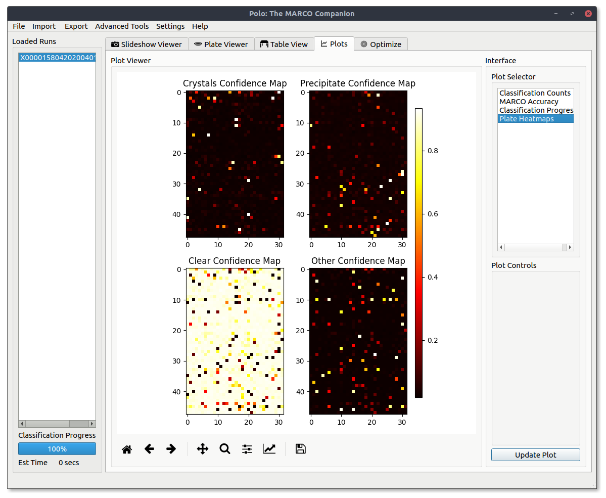
Saving a Plot¶
If you wish, you can save a plot as an image to your machine by using the plot control icons at the bottom of the Plots tab. Select the floppy disc to save the current plot.
Using the Optimize Tool¶
Once you have identified crystal containing wells, you can easily design optimization screens using the optimize tool. The optimize tool automatically creates screens around the cocktail conditions a crystal hit grown in.
Currently all conditions come directly from HWI screening conditions and changing the conditions manually is not currently supported.
For more information on optimization protocols you can read this document provided by HWI,
Reproducing HWI HTCSC crystallization screening hits
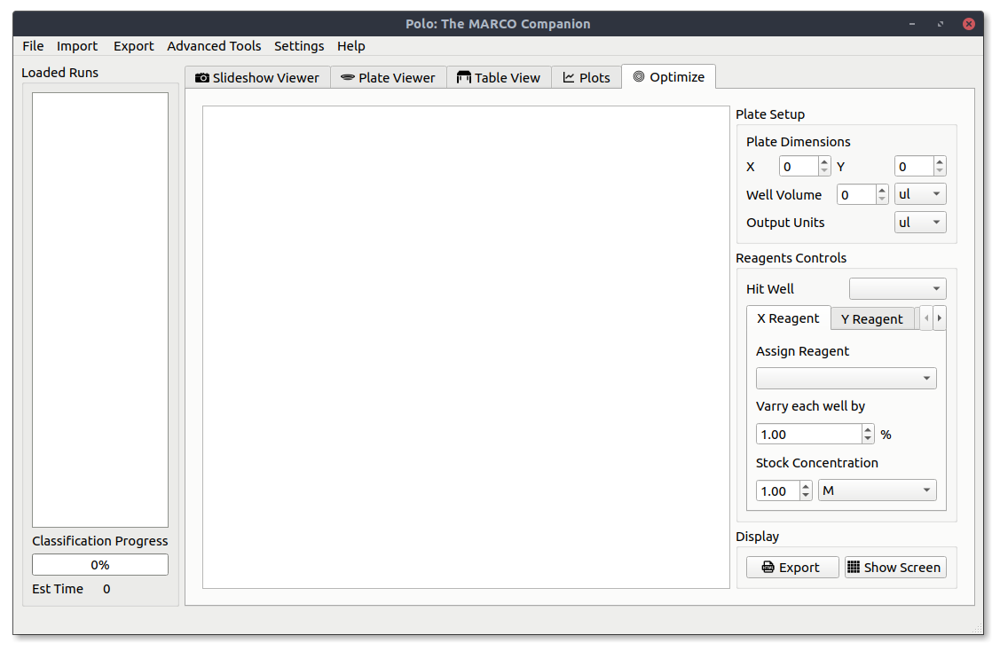
Setting Up Your Plate¶
The first thing to do is to tell Polo what the plate you will be using for your optimization screen. Set the number of wells in your plate by adjusting the plate dimensions.
For example a standard 24 well plate could have 6 wells on X axis and 4 on the Y or vice versa. Which value you assign to which axis is arbitrary as long as you assign the reagent you want to screen for on that same axis.
You should also adjust the well volume by using the Well Volume and associated units combo boxes. This volume will be used as the maximum volume for each well.
Selecting Reagents¶
Once your plate is set up you are ready to select reagents to screen for. Wells you have classified as crystal containing are listed in the Hit Well combo box under the Reagent Controls panel. Selecting a well will display its containing reagents under the Assign Reagents combo boxes of the X Reagent and Y Reagent tabs.
Note
A reagent assigned under the X Reagent tab will be varied on the X-axis of the plate and the reagent assigned under the Y Reagent tab will be varied on the Y-axis of the plate.
Since any given plate only has two axis only two reagents can be screened for, but many crystallization cocktail contain three or more reagents. Reagents not assigned to either the x or y reagent will be considered constant and will be present in your final screen but always at the same concentration.
Once you have assigned your reagents set a stock concentration for each reagent and select a percentage to the x and y reagents by. This is always in reference to the hit concentration for the particular reagent.
For example if you selected citric acid as your x reagent and it was present in the crystallization cocktail at a concentration of 0.5 M the concentration of citric acid in your optimization screen will be varied in reference to 0.5 M by the percentage selected in the Vary each well by spin box.
Additionally, the hit concentration is always the center most well of the axis. Meaning if there are 6 wells on your plate’s x-axis you can expect the concentration of citric acis in the 3rd well to be 0.5 M (using the example above).
Viewing Your Optimization Screen¶
After everything is set up, press Show Screen to display your current optimization screen. It will look something like the image below.
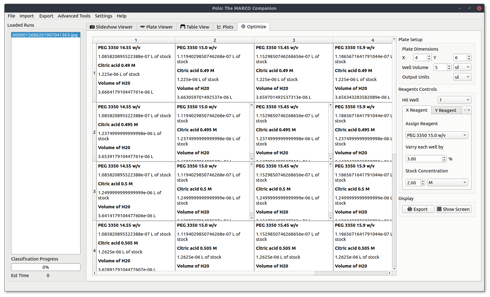
If it does not fill the screen slightly adjust the size of the Polo window and it should snap into place.
Exporting A Screen¶
After setting up your screen you can export it to an html file to print and / or share with your friends. To do so just hit the Export button. This will open a file browser and you can select where you would like to save the file. You can then open the file with any browser to view it or save it as a pdf.
Advanced Tools¶
Advanced tools go a bit beyond image classification and viewing and allow you to take advantage of the fact a single screening run will likely be imaged at multiple points in time and with multiple imaging technologies. All tools described below can be found by navigating to the menu bar and selecting Advanced Tools.
Time Resolved Runs¶
Usually, the sample plate will be imaged at multiple points in time. Polo allows you to link these runs together using the Add Time Resolved tool under Advanced Tools. Polo will automatically determine the order of the runs based on their date and then allow you to navigate between them in both the Slideshow Viewer tab and Plate Viewer tab using the Next Date and Previous Date buttons.
Adding an Alternative Spectrum¶
Oftentimes, the same plate will be imaged with a photographic technology besides microscopy in order to verify the presence of crystals in a sample. If you have images taken with such a technology you can identify them as such in the Run Importer window (link here).
Then navigate to Advanced Tools and select Add Spectrum which will open a dialog like the one shown below.
Valid runs will automatically be assigned to an image category based on the spectrum they were assigned at import. Select one run from each category that you would like to link and when finished press Submit Assignment.
You will then be able to swap between these images in both the Slideshow Viewer and Plate Viewers. This can be very useful for verifying a crystal is in fact a protein crystal and not salt.
Saving a Run¶
Once you have invested time into picking out the best screening conditions you are going to want to save your work and share it with others. The best way to do this in Polo is by saving your current run as a .xtal file.
.xtal File Format¶
.xtal is a json based format for saving screening runs after they have been loaded into and processed using Polo. It will maintain all of your image classifications and metadata in a single file. Additionally, the actual screening images are encoded directly into the xtal file which makes sharing your data to another Polo user very easy as it only requires sharing the single .xtal file.
Actually Saving Your Run¶
To save your Run from Polo, navigate to the menu bar and and select File -> Save or Save As. If you have not saved your current run to a xtal file before a file browser will automatically be opened and you can specify a location and name for your save file.
Note
Do not close Polo while a run is being saved!
After the save is complete Polo will notify you with a popup telling you it is safe to close the program and your save as completed. You can now share your xtal file with anyone else using Polo!